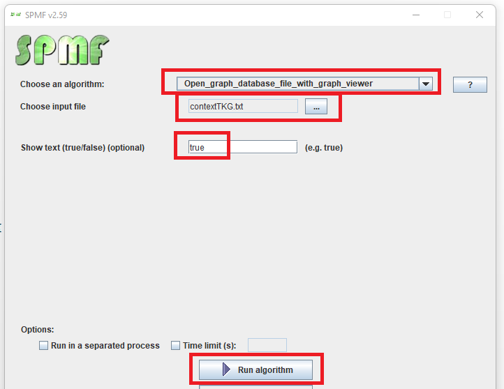
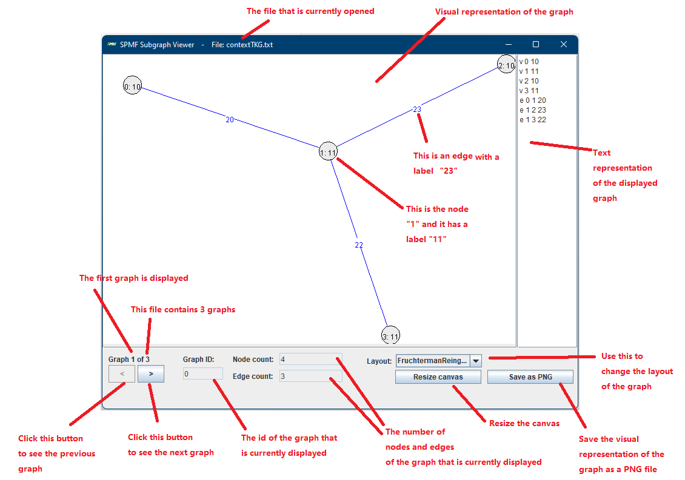
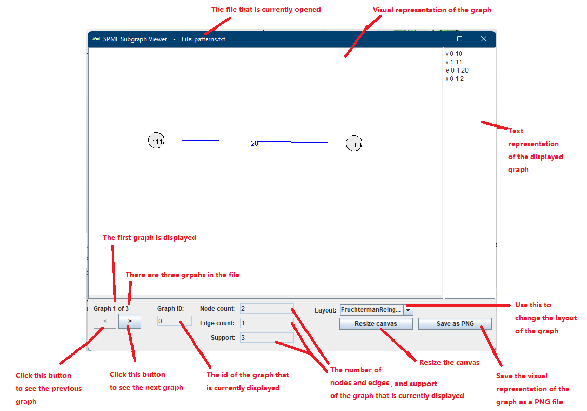
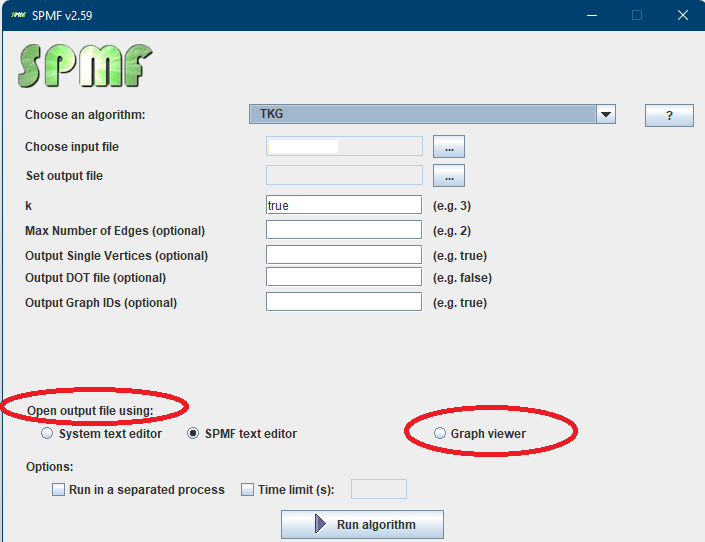

Open a graph file using the SPMF Graph Viewer (SPMF documentation)
This example explains how to open a graph file using the SPMF Graph Viewer .
The SPMF graph viewer is a simple tool to visualize the content of a file containing graphs.
The Graph Viewer is designed mainly to:
- read input files that contain one or more graphs that follow the input format of the gSpan, cgSpan and TKG algorithms, or similar algorithms
- read output files that contain subgraphs found by the gSpan, cgSpan and TKG algorithms, or similar algorithms
Below, I will explain these two cases.
Example 1: Visualizing a graph database file
How to run this example?
- If you are using the graphical interface of SPMF, (1) choose the "Open_graph_file_with_SPMF_graph_viewer" algorithm, (2) choose the contextTKG.txt file as input, (3) set the parameter "Show text" to true, and then (4) click "run algorithm"

- If you want to execute this example from the command
, then execute this command:
java -jar spmf.jar run Open_graph_database_file_with_graph_viewer contextTKG.txt
in a folder containing spmf.jar and some graph file such as contextTKG .txt which is included with SPMF.
What will be displayed?
After running the example, the content of the file will be displayed by the Graph Viewer. The picture below show the results and explain the different functions of the Graph viewer. Then, after that, I will explain the file format.

What is the input?
The input file format is defined as follows. It is a text file which contains one or more graphs. A graph is defined by a few lines of text that follow the following format:
- t # N This is the first line of a graph. It indicates that this is the N-th graph in the file
- v M L This line defines the M-th vertex of the current graph, which has a label L
- e P Q L This line defines an edge, which connects the P-th vertex with the Q-th vertex. This edge has the label L
For the above example, the input file is defined as follows:
t # 0
v 0 10
v 1 11
v 2 10
v 3 11
e 0 1 20
e 1 2 23
e 1 3 22
t # 1
v 4 10
v 5 11
e 4 5 20
t # 2
v 6 10
v 7 10
v 8 11
v 9 11
e 6 7 21
e 7 8 23
e 7 9 20
e 8 9 22
The first graph is displayed in the example picture above by the Graph Viewer.
Example 2: Visualizing a file containing subgraphs discovered by a frequent subgraph mining algorithm
How to run this example?
- If you are using the graphical interface of SPMF, (1) choose the "Open_graph_file_with_SPMF_graph_viewer" algorithm, (2) choose the patterns.txt file as input, (3) set the parameter "Show text" to true, and then (4) click "run algorithm"
- If you want to execute this example from the command , then execute this command:
java -jar spmf.jar run Open_graph_database_file_with_graph_viewer patterns.txt
in a folder containing spmf.jar and some graph file such as patterns.txt which is included with SPMF.
What will be displayed?
After running the example, the content of the file will be displayed by the Graph Viewer. The picture below show the results and explain the different functions of the Graph viewer. Then, after that, I will explain the file format.

What is the input?
The input file format is defined as follows. It is a text file, listing subgraphs found by an algorithm. A frequent subgraph is defined by a few lines of text that follow the following format:
- t # N * Z This is the first line of a subgraph. It indicates that this is the N-th subgraph in the file and that its support is Z.
- v M L This line defines the M-th vertex of the current subgraph, which has a label L
- e P Q L This line defines an edge, which connects the P-th vertex with the Q-th vertex. This edge has the label L
- x X1 X2 ... This lines lists the identifiers of all the graphs X1, X2 ... that contains the current subgraph.
For the above example, the input file is defined as follows:
t # 0 * 3
v 0 10
v 1 11
e 0 1 20
x 0 1 2
t # 1 * 3
v 0 11
x 0 1 2
t # 2 * 3
v 0 10
x 0 1 2
The first graph is displayed in the example picture above by the Graph Viewer.
Other ways of launching the Graph Viewer
When running a subgraph mining algorithm like TKG in SPMF using the graphical user interface, it is possible to choose to open the output file produced by the algorithm using the GraphViewer using this option of the graphical user interface:
